WWW.FORNAXVOID.COM
>> RESOURCES >> COLOR PALETTES
I arranged vintage color palettes for the use with modern computers. Sources were mainly the genius articles on wikipedia: [1] [2] [3]. There you can also find technical details on how the palettes could be used, for example how many colors could be used at a time.
To simplify the use of the palettes in modern environments, I added transparency, if enough space (palette <256 colors) was available.
2015 Fornax Void
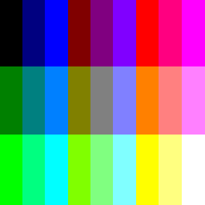
Amstrad CPC // 27 colors
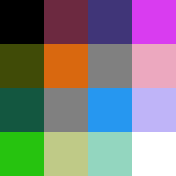
Apple II // 16 colors
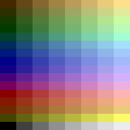
Atari 2600 NTSC // 128 colors
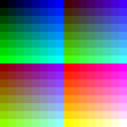
Atari ST // Reduced to 256 colors (from 512)
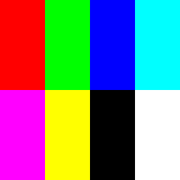
BBC Micro // 8 colors
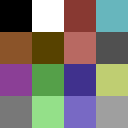
Commodore 64 // 16 colors
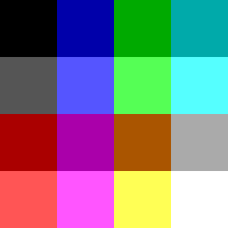
DOS CGA // 16 colors

Deluxe Paint // 256 colors
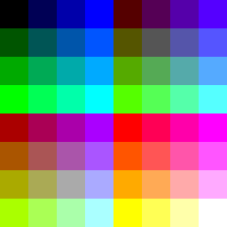
DOS EGA // 64 colors
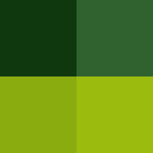
Game Boy // 4 monochrome shades
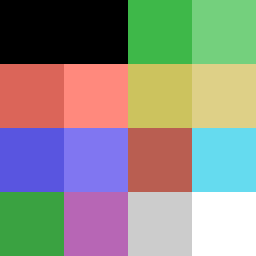
MSX // 15 colors
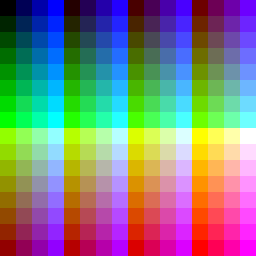
MSX2 // reduced to 256 colors (from 512)
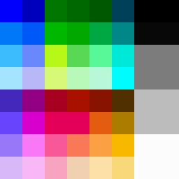
NES // 52 colors (all 4 palettes merged)
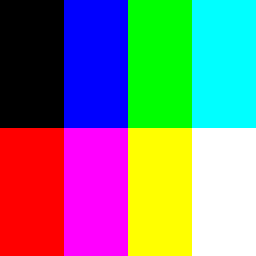
3-bit Teletext // 8 colors (same as BBC Micro)
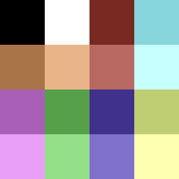
Commodore VIC 20 // 16 colors
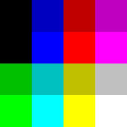
ZX Spectrum // 16 colors
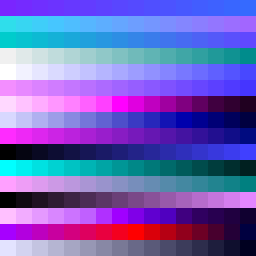
Fornax Void Official Palette No.1 // 256 colors
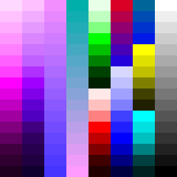
Fornax Void Official Palette No.2 // 128 colors